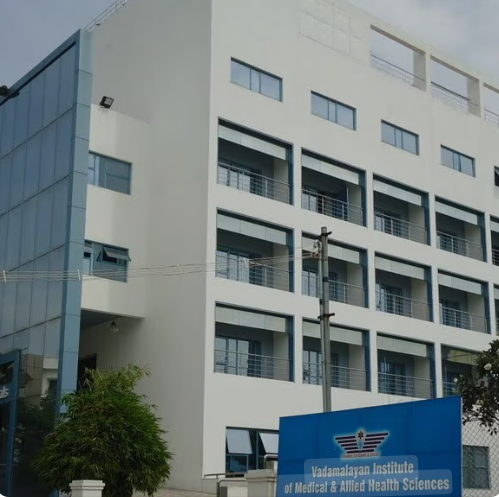

Vadamalayan Hospital, located in the heart of Madurai, is one of the city’s most respected
and advanced healthcare institutions. With a legacy of trust and service, the hospital is
known for its state-of-the-art facilities, expert doctors, and patient-centered care.
From emergency services to specialized treatments, it provides comprehensive healthcare
under one roof.
The hospital’s commitment to modern medical technology, compassionate staff, and
affordable care makes it a preferred choice for families across Tamil Nadu.
More than a hospital, it is a place of healing, hope, and service to the community.